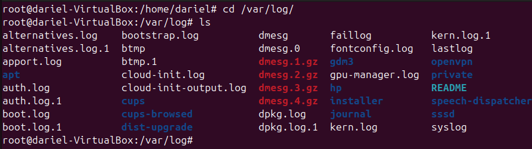
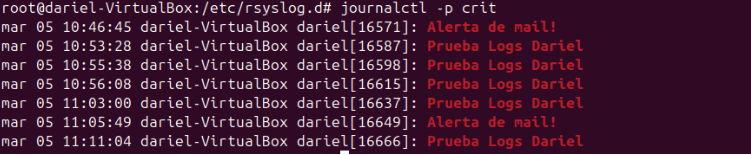
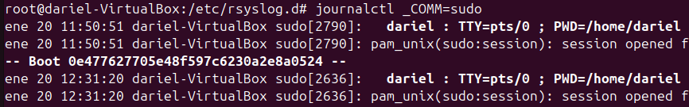
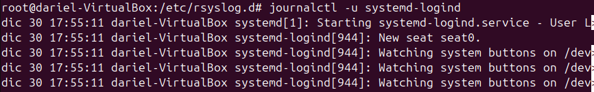

MONITORIZACIÓN
En este apartado voy a hablar sobre el monitoreo basado en logs del sistema o logs que queramos crear.
Que es un log
Los logs son registros que documentan eventos que ocurren en un sistema informático. Estos registros pueden ser generados por el sistema operativo, aplicaciones, servicios o cualquier componente que desee realizar un seguimiento de sus actividades. Los logs son esenciales para la monitorización y el diagnóstico de problemas, ya que proporcionan información detallada sobre el comportamiento del sistema y los eventos que han ocurrido.
Existen diferentes tipos de logs, como:
- Logs del sistema: Registran eventos relacionados con el sistema operativo.
- Logs de aplicaciones: Registran eventos específicos de aplicaciones.
- Logs de seguridad: Registran eventos relacionados con la seguridad, como intentos de inicio de sesión fallidos.
La monitorización basada en logs implica recopilar, analizar y visualizar estos registros para identificar patrones, detectar anomalías y solucionar problemas de manera proactiva.
Donde se almacenan los logs en Ubuntu
En Ubuntu, los logs del sistema se almacenan en el directorio /var/log. Este directorio contiene varios archivos de logs que registran diferentes tipos de eventos del sistema.
A continuación, describo tres archivos de logs comunes que se encuentran en esta ubicación:
-
/var/log/syslog: Este archivo registra una variedad de mensajes del sistema, incluyendo mensajes del kernel, servicios y aplicaciones. Es útil para obtener una visión general del estado del sistema y para diagnosticar problemas generales.
-
/var/log/auth.log: Este archivo registra todos los eventos relacionados con la autenticación, como inicios de sesión exitosos y fallidos, cambios de usuario y otros eventos de seguridad. Es esencial para monitorear la seguridad del sistema.
-
/var/log/kern.log: Este archivo contiene mensajes específicos del kernel de Linux. Es útil para diagnosticar problemas relacionados con el hardware y el núcleo del sistema operativo.
Estos archivos de logs son fundamentales para la monitorización y el diagnóstico de problemas en sistemas Ubuntu.

En /var/log/ se encuentran muchos ficheros, entre ellos se encuentran dmesg, dmesg.0, dmesg.1.gz, dmesg.2.gz.
Estos ficheros cumplen una función similar a kern.log:
- dmesg: Este archivo contiene mensajes del anillo de mensajes del kernel. Es útil para diagnosticar problemas relacionados con el hardware y el arranque del sistema.
- dmesg.0: Es una copia del archivo
dmesganterior, que se guarda cuando el sistema se reinicia. - dmesg.1.gz, dmesg.2.gz: Son versiones comprimidas de archivos
dmesgmás antiguos. Estos archivos se comprimen para ahorrar espacio y permiten mantener un historial de mensajes del kernel.
Estos archivos son útiles para realizar un seguimiento de los eventos del kernel y diagnosticar problemas relacionados con el hardware y el arranque del sistema.
Gestión de logs con logrotate
Para evitar que los archivos de logs crezcan indefinidamente y consuman todo el espacio en disco, se utiliza una herramienta llamada logrotate. Esta herramienta permite rotar, comprimir y eliminar archivos de logs de manera automática, según una configuración predefinida.
Configuración de logrotate
La configuración principal de logrotate se encuentra en el archivo /etc/logrotate.conf. Este archivo contiene las directivas globales que afectan a todos los archivos de logs gestionados por logrotate. Algunas de las directivas comunes incluyen:
weekly: Especifica que los logs deben rotarse semanalmente.rotate 4: Indica que se deben mantener cuatro archivos de logs antiguos antes de eliminar el más antiguo.compress: Indica que los archivos de logs rotados deben ser comprimidos para ahorrar espacio en disco.create: Especifica que se debe crear un nuevo archivo de log vacío después de rotar el archivo actual.
Además del archivo de configuración principal, logrotate también utiliza el directorio /etc/logrotate.d para almacenar configuraciones específicas para diferentes servicios y aplicaciones. Cada archivo en este directorio contiene directivas de rotación de logs para un servicio o aplicación particular. Por ejemplo, puede haber un archivo /etc/logrotate.d/apache2 que contenga la configuración de rotación de logs para el servidor web Apache.

Configuración de logs en /etc/rsyslog.d/50-default.conf
El archivo /etc/rsyslog.d/50-default.conf es parte de la configuración del sistema de registro de mensajes rsyslog en Ubuntu. Este archivo define qué mensajes de log se envían a qué archivos de log específicos. A continuación, describo algunas de las configuraciones comunes que se pueden encontrar en este archivo:
auth,authpriv.*: Los mensajes relacionados con la autenticación y la privacidad se registran en/var/log/auth.log.*.*;auth,authpriv.none: Todos los mensajes, excepto los relacionados con la autenticación y la privacidad, se registran en/var/log/syslog.daemon.*: Los mensajes del daemon se registran en/var/log/daemon.log.kern.*: Los mensajes del kernel se registran en/var/log/kern.log.mail.*: Los mensajes relacionados con el correo se registran en/var/log/mail.log.user.*: Los mensajes del usuario se registran en/var/log/user.log.
Estas configuraciones permiten que rsyslog dirija los mensajes de log a los archivos adecuados, facilitando la monitorización y el diagnóstico de problemas específicos del sistema. Es posible personalizar este archivo para ajustar la configuración de los logs según las necesidades específicas del sistema o de las aplicaciones que se estén ejecutando.
Siempre que se modifique este fichero, es necesario ejecutar los siguientes comandos para aplicar los cambios:
sudo systemctl restart rsyslog
sudo systemctl daemon-reload
Pruebas y Personalización
En este apartado voy a mostrar cómo personalizar los registros de logs, pero primero voy a hacer una prueba con logs del sistema.
Forzar un resgistro de log
Por ejemplo, voy a realizar una simulación de alerta en el log de correo:
En un terminal, ejecuta el comando tail -f /var/log/syslog para registrar en tiempo real lo que va pasando en este fichero de logs.
En otro terminal, ejecuta el comando logger para simular logs: logger -i -s -p mail.alert "Descripción de la alerta"


Tanto el fichero que he hecho el tail que es /var/log/syslog que registra todos los logs del sistema como /var/log/mail.log han registrado la simulación de log.
Personalización de logs
Modifico el fichero /etc/rsyslog.d/50-default.conf como ejemplo añado esta línea donde todos los servicios con prioridad crit, se almacenarán en /var/log/dariel.log.

He añadido la línea que está subrallada, esta línea indica que:
*: Se aplica a todas las facilidades del sistema, como auth, kern, mail, etc.crit: Especifica el nivel de severidad crítico. Solo se registran mensajes graves./var/log/dariel.log: Es el archivo donde se almacenarán esos logs críticos.
La ruta personalizada se crea sola, no hace falta crear la carpeta préviamente.
Verificar log personalizado
Como verificación, vuelvo a hacer uso del comando logger para simular un log con prioridad crit y ver si se ha almacenado correctamente.

Comando JOURNALCTL
El comando journalctl se utiliza para consultar y mostrar los registros del sistema almacenados por el servicio systemd-journald. Este comando permite a los administradores del sistema ver los mensajes de registro generados por el kernel, los servicios del sistema y otras aplicaciones que utilizan el sistema de registro de systemd.
Funcionalidades principales:
- Visualización de registros: Permite ver los registros del sistema en tiempo real o históricos.
- Filtrado de registros: Ofrece opciones para filtrar los registros por unidad de servicio, prioridad, fecha, etc.
- Exportación de registros: Permite exportar los registros en diferentes formatos, como JSON.
Ejemplos de uso:
journalctl -p crit: Muestra todos los logs con este estado

journalctl _COMM=(comando): Filtra por comandos.

journalctl -u systemd-logind: Muestra los logs del serviciosystemd-logind, que gestiona sesiones de usuario, inicios y cierres de sesión.

Existen más opciones para journalctl, como por ejemplo buscar fallos de inicio de sesión por fallo de contraseña: journalctl -u systemd-logind | grep "Failed password"
También podemos filtrar por fechas, por ejemplo si quisieramos filtrar que nos muestre los inicios de sesión desde el 1 de febrero de 2025: journalctl -u systemd-logind --since "2025-02-01"
Monitorización en Red de Logs
Voy a explicar como podemos compartir los logs de un usuario a un administrador para que los gestione.
Ordenador receptor (administrador)
Primero habilitamos la recepción de logs en el fichero /etc/rsyslog.conf.
Descomentamos estas líneas:

Reiniciamos el servicio rsyslog para aplicar los cambios:
sudo systemctl restart rsyslog

Ordenador emisor (usuario)
En el ordenador del usuario, configuramos el envío de logs al servidor del administrador. Editamos el archivo /etc/rsyslog.d/50-default.conf y añadimos la siguiente línea:
*.* @IP_DEL_SERVIDOR:514
*.* @@IP_DEL_SERVIDOR:514
Reiniciamos el servicio rsyslog en el ordenador del usuario:
sudo systemctl restart rsyslog
Verificación de logs en red
Para verificar que los logs se están enviando correctamente, en el servidor del administrador podemos utilizar el comando tail para ver los logs en tiempo real:
sudo tail -f /var/log/syslog
De esta manera, los logs del usuario se enviarán al servidor del administrador, permitiendo una monitorización centralizada de los eventos del sistema.